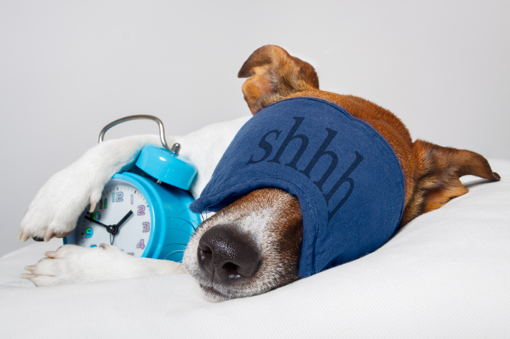

Wir verwenden Cookies um unsere Webseite zu verbessern, personalisierte Inhalte anzuzeigen und Ihnen ein großartiges Webseiten-Erlebnis zu bieten.
Gesunde Ernährung Frühstück, Mittag, Abend, Regelmäßig und ausgewogen, Körper und Geist fit.
Weißt du was? Eine ausgewogene und gesunde Ernährung kann tatsächlich ein wahrer Game-Changer im stressigen Uni-Alltag sein. Aber hey, ich weiß auch, dass du in der Uni manchmal einfach keine Zeit hast, um ausgiebige Mahlzeiten zuzubereiten. Keine Sorge, ich habe da einen Plan! Wie wäre es, wenn du an weniger stressigen Tagen ein bisschen Zeit investierst, um nahrhafte Mahlzeiten vorzubereiten und sie dann im Gefrierschrank aufbewahrst? So hast du immer etwas Gesundes zur Hand, selbst wenn der Zeitdruck zuschlägt.Ach ja, und nicht zu vergessen: Snacks! Die sind doch immer willkommen, oder? Statt zu ungesunden Naschereien zu greifen, probier doch mal Mandeln oder Obst- und Gemüsestreifen. Sie sind nicht nur super lecker, sondern liefern auch eine ordentliche Portion wichtiger Nährstoffe. Und achte unbedingt darauf, genügend Wasser zu trinken, um deinen Körper hydratisiert zu halten. Denn Dehydration kann zu Müdigkeit und Konzentrationsschwierigkeiten führen, und das wollen wir doch nicht, oder?
Du hast das drauf, also gib deinem Körper die richtige Nahrung und rocke den Uni-Alltag!
Schlaf ist wichtig! Schlaf als Wundermittel, Regeneration und Erholung, Gesunder Geist im Körper.
Hey :) Ich muss dir unbedingt etwas Wichtiges erzählen: Schlaf ist der Schlüssel zu unserem Wohlbefinden und unserer Leistungsfähigkeit, besonders wenn es ums Lernen und Studieren geht.“That we are not much sicker and much madder than we are is due exclusively to that most blessed and blessing of all natural graces, sleep.” ~ Aldous Huxley
Guter Schlaf ist einfach unschätzbar! Aber wenn du auf dem Campus lebst und es schwierig ist, Ruhe und Privatsphäre zu finden, kann das zu Schlafstörungen und Müdigkeit führen. Keine Sorge, ich hab ein paar tolle Tipps für dich, um dir die nötige Einsamkeit und den Frieden zu verschaffen.
 Wie wär's mit einem Schlafzelt? Das klingt vielleicht etwas abenteuerlich, aber es kann dir tatsächlich die Ruhe und den Rückzugsort bieten, die du brauchst. Und wenn das nicht dein Ding ist, gibt es immer noch Airpods mit Geräuschunterdrückung oder Schlafmasken, um Licht und Lärm auszublenden und dir einen erholsamen Schlaf zu ermöglichen. Hauptsache, du kommst zur Ruhe und kannst dich auf das Wesentliche konzentrieren - deinen Schlaf!
Also, lass dich nicht von Schlafmangel ausbremsen. Gib deinem Körper die Erholung, die er verdient, und du wirst sehen, wie viel besser du dich fühlst und wie viel effektiver du lernen kannst. Du rockst das !
Für ausreichend Bewegung sorgen Laufen im Freien, Natur und frische Luft tanken, Energie für den Tag.
Hey, lass uns mal über Sport reden! Ja ja ,ich weiß, das ist nicht jedermanns Sache,aber körperliche Betätigung ist selbst während stressiger Studienphasen unglaublich wichtig. Es gibt so viele Möglichkeiten, körperlich aktiv zu sein, ohne ein Fitnessstudio zu besuchen oder stundenlang auf einem Laufband zu rennen. Zum Beispiel könntest du, wenn du mit dem Auto zur Uni fährst, etwas weiter entfernt parken und stattdessen den Rest des Weges zu Fuß gehen. Oder wie wäre es mit kostenlosen Online-Übungsvideos auf YouTube oder Fitness-Apps, die du bequem von zu Hause aus ausprobieren kannst?
Und wenn du gerne tanzt, warum nicht mal eine Zumba-Klasse ausprobieren? Oder wenn du lieber Yoga machen möchtest, gibt es eine Vielzahl von Online-Yoga-Kursen, die du entdecken kannst. Das Wichtigste ist, dass du körperlich aktiv bist und Bewegung in deinen Alltag integrierst, um deine Gesundheit zu verbessern und deine kognitiven Fähigkeiten zu unterstützen.
Also, los geht's! Lass uns deinen Körper in Bewegung bringen und deine Studienzeit mit einer extra Portion Energie und Wohlbefinden bereichern.
Zusammenfassend lässt sich sagen, dass eine gesunde Study-Life-Balance von großer Bedeutung ist, um akademischen Erfolg und Wohlbefinden zu erreichen. Indem man individuelle Bedürfnisse berücksichtigt und die besten Strategien zur Optimierung der eigenen Balance findet, kann man das Studium optimal nutzen und gleichzeitig die eigene Gesundheit pflegen. In unseren anderen Tipps und Blogbeiträgen findest du weitere wertvolle Ratschläge, um dieses Ziel zu erreichen.